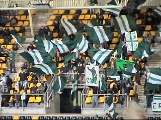
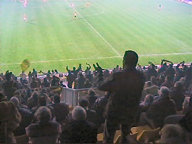
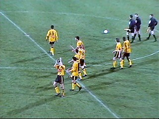

|
Roda JC - Werder Bremen (2-1) 10 januari 2004 |
Net zoals een halfjaar geleden oefent Roda tegen
Werder Bremen, de nr. 1 van de Bundesliga.

Ruim 100 uitermate bezopen en feestvierende
Bremer supporters.
Testspeler Raio Piiroja uit Estland.
Het was kennelijk warm in het gastenvak.
In de 19e min. scoort Glasnic 0-1.
Bijna 1-1 nadat een Duitser de bal op de lat kopt.
Maar hier is het dan toch nog prijs door een
schitterend afstandschot van Kone (33').
In de tweede helft vinden de fans van Bremen de
tijd aangebroken voor een fraaie vuurwerkshow.
De westenwind spreidde het rookgordijn over
het gehele veld.
Dankzij het rookgordijn kon Ioannis Anastasiou
ontsnappen en 2-1 scoren (53')!

Geen gebrek aan sfeer vanavond!

Game over; wederom 2-1 voor Roda. Klasse!

Het prijswinnende kapsel ging naar Kevin H.
De tweede plaats was voor de gemillimeterde
Ramonski (helaas geen foto).
Aan de Imstenraderweg was een knokpartij. We
mochten niet door van de stewards.
Royale politiebegeleiding bij aftocht van de
spelersbus van Werder Bremen.